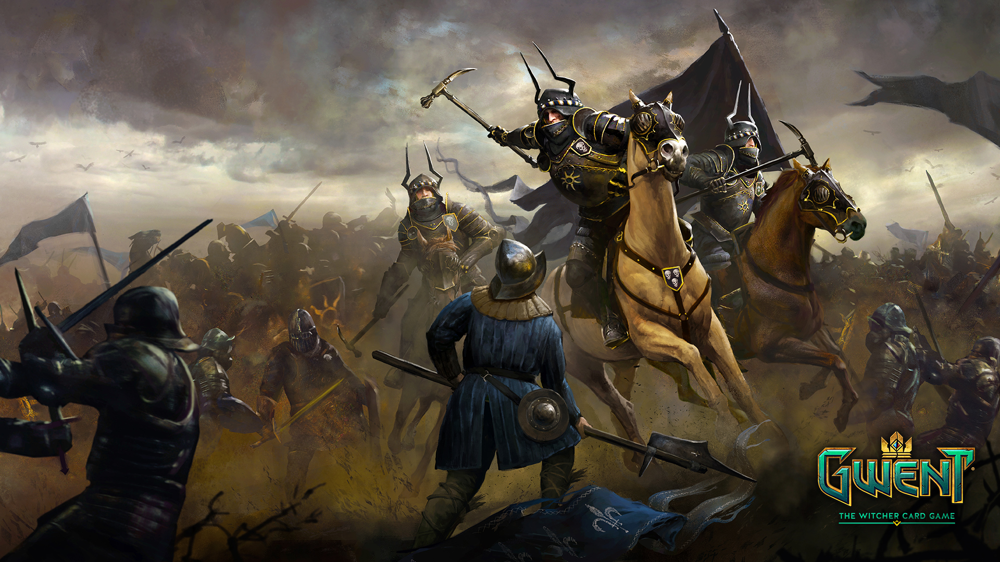
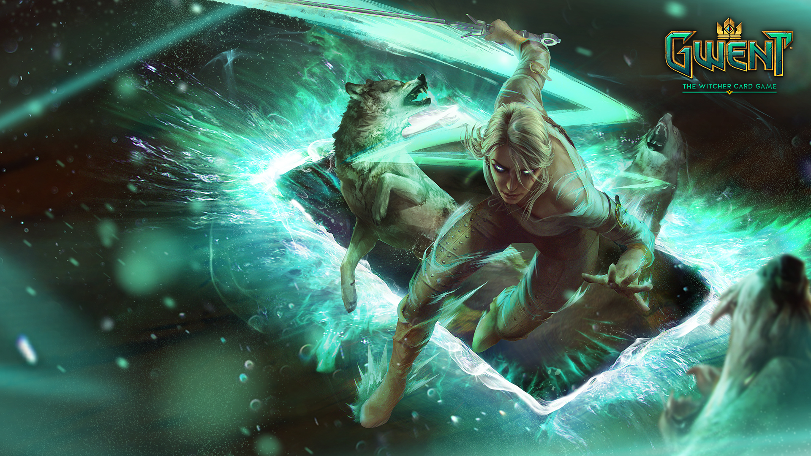
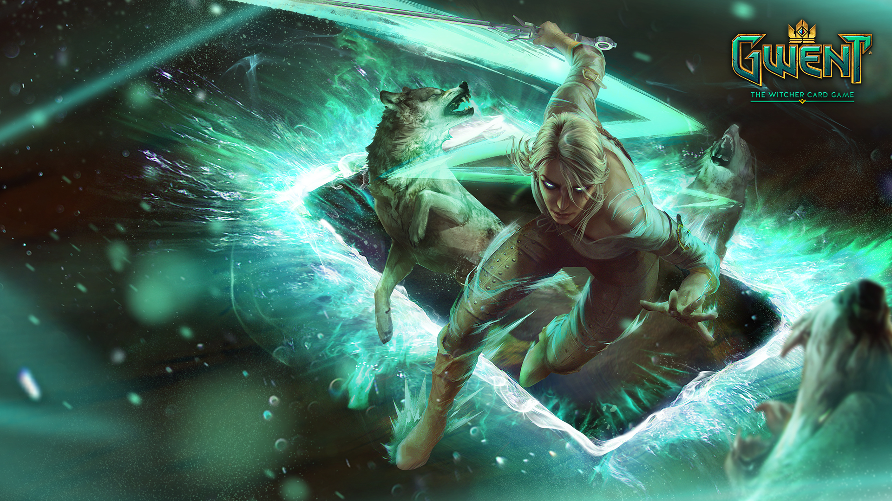

Gwent: The Witcher Card Game
"Wake up dwarves! Humans lust after our lady folk!"
Despre joc
Gwent: The Witcher Card Game este un joc digital de cărți de colecție gratuit dezvoltat și publicat de CD Projekt pentru Microsoft Windows, PlayStation 4 și Xbox One în 2018, pentru iOS în 2019, pentru Android în 2020 și pentru macOS în 2021. Jocul este derivat din jocul de cărți cu același nume prezentat în romanele lui Andrzej Sapkowski The Witcher și poate fi jucat în jocul video The Witcher 3: Wild Hunt. O extensie, intitulată Gwent: Rogue Mage, a fost lansată în 2022.
Gwent este un joc de cărți pe rând, între doi jucători, care poate dura două până la trei runde. Jucătorii joacă câte o carte la fiecare tură dintr-o mână de 10 cărți, alese dintr-un pachet de 25. Fiecare pachet aparține uneia dintre cele șase facțiuni care oferă stiluri de joc diferite. Spre deosebire de varianta lui Gwent din The Witcher 3: Wild Hunt, rândul Asediu este eliminat, lăsând două rânduri în care pot fi jucate cărți: rândurile Melee și Ranged.
Scopul este de a câștiga două din trei runde jucând cărți pentru a câștiga puncte numite „putere” pe tablă. Fiecare carte are o anumită putere (care poate fi mărită sau redusă), rezultând că punctele jucătorului reprezintă totalul tuturor cărților sale. Un jucător câștigă o rundă având mai multe puncte la bord decât adversarul său. Fiecare carte poate avea mai multe abilități speciale, cum ar fi capacitatea de a deteriora alte unități la desfășurare, de a crește valoarea punctelor altor unități, de a genera alte unități atunci când sunt îndeplinite condițiile date, de a declanșa un efect atunci când este distrusă și de a bloca capacitatea altei cărți. Rundele se termină atunci când ambii jucători trec în runda următoare sau când ambii jucători rămân fără cărți. Primul care câștigă două din trei runde câștigă jocul.
Fiecare pachet este construit cu o facțiune aleasă combinată cu o abilitate unică de lider. Pachetul va avea o limită de provizion de 150 plus provizionul pe care liderul o adaugă. Este necesar un minim de 25 de cărți, dintre care cel puțin 13 fiind cărți de unitate care sunt jucate pe teren și au putere (spre deosebire de cărțile speciale/artefacte care sunt aruncate la utilizare sau rămân pe teren fără putere). Fiecare carte are un Cost de Aprovizionare și numai cărțile neutre și din facțiunea selectată pot fi adăugate la un pachet. Punctele sunt alcătuite din cărți de bronz, pe care jucătorul le poate avea două copii în colecția și pachetul lor, și cărți de aur, din care jucătorii pot deține doar o copie.
Cadre din joc:
 
